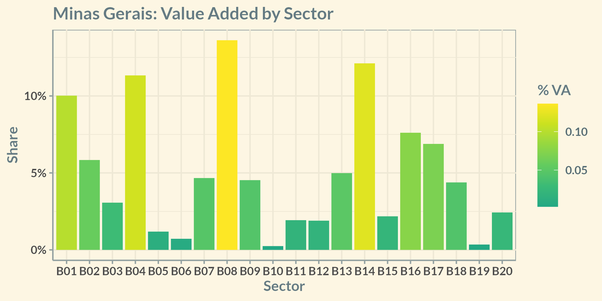

| Code | Region | B02 | B03 | B04 | B05 | B06 | B07 | B08 | B09 | B12 | B13 | B14 | B15 |
|---|---|---|---|---|---|---|---|---|---|---|---|---|---|
| R01 | Belo Horizonte | Key | Key | Key | Key | Key | |||||||
| R02 | B. Cocais | Key | Key | Key | Key | Key | |||||||
| R03 | Caeté | Key | Key | Key | Key | ||||||||
| R04 | Catas Altas | Key | Key | Key | |||||||||
| R05 | Congonhas | Key | Key | Key | |||||||||
| R06 | Diamantina | Key | Key | Key | Key | Key | |||||||
| R07 | Mariana | Key | Key | Key | |||||||||
| R08 | Ouro Preto | Key | Key | Key | Key | ||||||||
| R09 | Sabará | Key | Key | Key | Key | Key | |||||||
| R10 | Santa Bárbara | Key | Key | Key | Key | ||||||||
| R11 | São João del Rei | Key | Key | Key | Key | Key | |||||||
| R12 | Serro | Key | Key | Key | |||||||||
| R13 | Tiradentes | Key | Key | Key | Key | ||||||||
| R14 | Rest of MG | Key | Key | Key | Key | Key | |||||||
| R15 | Rest of BR | Key | Key | Key | Key | Key | Key | Key | Key | Key | Key | Key |
Heritage Tourism and Economic Development:
An Input-Output Analysis for Minas Gerais, Brazil
Arthur Alvarenga, Cláudio Seibert, Elvira Medeiros, Filipe Reis, and Fernando Perobelli
2023-07-30
Motivation
- What role does tourism plays in a developing economy?
- Minas Gerais, Brazil:
- Highly dependent on the mining industry
- Rich cultural and architectonic heritage
- How related it is to the rest of the economy?
- What about regional disparities?
We have a lot of questions, but not so many answers.
Minas Gerais: an Overview
- Population: 21.4 million
- #2 in Brazil
- HDI: 0.774 (2010)
- #4 in Brazil
- GDP: US$ 177 billion
- 9.3% of national output
Minas Gerais is a snapshot of Brazil: It reproduces national patterns of income and quality of life disparities
Minas Gerais: an Overview

- Trade (B08), Real Estate (B14), Manufacturing (B04), and Agriculture (B01) account for 46% of the Value Added
- Services (B05-B07, B09-B20): 56% of VA
Minas Gerais: an Overview
Summary Statistics
| Code | Region | Population | % MG | GVA (R$M) | % MG | HDI-M |
|---|---|---|---|---|---|---|
| R01 | Belo Horizonte | 2,530,701 | 11.82% | 71,892 | 12.69% | 0.810 |
| R02 | Barão de Cocais | 33,232 | 0.16% | 723 | 0.13% | 0.722 |
| R03 | Caeté | 45,364 | 0.21% | 575 | 0.10% | 0.728 |
| R04 | Catas Altas | 5,465 | 0.03% | 501 | 0.09% | 0.684 |
| R05 | Congonhas | 55,863 | 0.26% | 2,281 | 0.40% | 0.753 |
| R06 | Diamantina | 47,924 | 0.22% | 686 | 0.12% | 0.716 |
| R07 | Mariana | 61,830 | 0.29% | 3,832 | 0.68% | 0.742 |
| R08 | Ouro Preto | 74,824 | 0.35% | 5,978 | 1.05% | 0.741 |
| R09 | Sabará | 137,877 | 0.64% | 2,947 | 0.52% | 0.731 |
| R10 | Santa Bárbara | 31,873 | 0.15% | 1,159 | 0.20% | 0.707 |
| R11 | São João del Rei | 90,897 | 0.42% | 1,951 | 0.34% | 0.758 |
| R12 | Serro | 20,915 | 0.10% | 192 | 0.03% | 0.656 |
| R13 | Tiradentes | 8,160 | 0.04% | 118 | 0.02% | 0.740 |
| R14 | Rest of MG | 18,267,025 | 85.31% | 473,863 | 83.62% | 0.667 |
The Baroque Heritage
- Gold run, 17th and 18th centuries
- Portuguese-inspired with local features
- Sacred art, buildings, landmarks
- Three Unesco World Cultural Heritage sites
- Diamantina
- Ouro Preto
- Congonhas Sanctuary
The Baroque Heritage


Methodology
First challenge: lack of regional data
- Framework: Interregional Input-Output Setting (IIOAS)
- Haddad, Gonçalves Júnior, and Nascimento (2017)
- Homogenous production and utility functions across regions
- Consistent with national aggregates
- 15 regions, 20 sectors
- Trade matrices between regions
- Supply: \(TOTSUP := DOMSUP + EXP\)
- Exports data (\(EXP\)) known for each region and sector
- Domestic supply (\(DOMSUP\)): labor microdata as proxy
Methodology
Linkages
- Within regions (\(intra\))
- Key sector: \(FL > 1\) and \(BL > 1\)
- E.g.: Backward linakges for region 1
- \(FL\)s are likewise, but on rows instead of columns
\[ \begin{aligned} BL_A^{intra, 1} = \frac{2^{-1} (l_{AA}^{11} + l_{BA}^{11})}{2^{-2} \sum_{j=1}^{15} \sum_{k=1}^{15} l_{jk}^{11}} \end{aligned} \]
Hypothetical Extraction
- Total extraction (backward and forward)
- Intermediate consumption and final demand
- Simulates sudden vanishing of the extracted industry
- Otherwise: assumes agents would substitute with imports
Methodology
Second challenge: tourism is a cross-sector industry
- Common approach: tourism satellite account (TSA)
- Not available for the state
- Our approach:
- Estimate tourism shares in each sector and region
- Tourism Characteristic Activities (TCA)s, classified by the state government
- Sensitivity analysis + state survey
- Apply shares as extraction coefficient
Example: if 10% of a sector’s output in a city is tourism-related, then 10% of the sector is extracted.
Methodology
Sensitivity analysis
| Region | B09 | B10 | B11 | B14 | B15 | B19 | |
|---|---|---|---|---|---|---|---|
| R01 | Belo Horizonte | - | - | - | - | - | - |
| R02 | Barão de Cocais | 25% | 98% | 25% | 1.25% | 0.25% | 25% |
| R03 | Caeté | 25% | 100% | 25% | 1.25% | 0.25% | 50% |
| R04 | Catas Altas | 25% | 98% | 25% | 1.25% | 0.25% | 50% |
| R05 | Congonhas | 25% | 96% | 25% | 1.25% | 0.25% | 50% |
| R06 | Diamantina | 50% | 92% | 75% | 5.00% | 1.00% | 100% |
| R07 | Mariana | 50% | 96% | 50% | 5.00% | 1.00% | 100% |
| R08 | Ouro Preto | 50% | 100% | 75% | 5.00% | 1.00% | 100% |
| R09 | Sabará | 13% | 98% | 25% | 1.25% | 0.25% | 25% |
| R10 | Santa Bárbara | 25% | 98% | 50% | 2.50% | 0.50% | 50% |
| R11 | São João del Rei | 25% | 100% | 25% | 5.00% | 1.00% | 100% |
| R12 | Serro | 50% | 98% | 50% | 5.00% | 1.00% | 100% |
| R13 | Tiradentes | 75% | 100% | 100% | 5.00% | 1.00% | 100% |
| R14 | Rest of MG | - | - | - | - | - | - |
| R15 | Rest of Brazil | - | - | - | - | - | - |
- Accommodation (B10): data from state survey
- Transportation (B09), Food Services (B11), and Arts, Culture, Sports, and Recreation (B19): relative to city size and its importance as touristic destination
- Real Estate (B14) and Administrative Services (B15): minor role, smaller coefficients
Data
- Brazilian 2018 I-O Matrix (Guilhoto 2021)
- Exports: International Trade Statistics (Brazil 2022a)
- Labor: Goverment database on firms and workers by economic activity (Brazil 2022b)
Results
Linkages
- Except for Transportation, no TCA is a key sector
- Most key sectors are services
- Especially Construction, Wholesale and Retail Trade, Transportation, and Finance
- Extractive Industries
- Biggest part of Value Added in most cities
- Key sector only in Sabará
- Mostly export commodities, with little local processing
Results
Results
Hypothetical Extraction
Simultaneous extraction
- Negligible impacts outside the Baroque Circuit
- Lowest: Catas Altas, \(< 1\%\)
- Highest: Tiradentes, \(65\%\)
- Average: \(10\%\)
- Median: \(6\%\)
Local extractions
- Smaller than in the simultaneous scenario
- Modest regional dependency
- Biggest difference in Tiradentes (\(33\%\)), average \(17\%\)
- Almost no intraregional impacts
- Notable exceptions: Ouro Preto & Mariana and Tiradentes & São João del Rei
Hypothetical Extraction
| Region | Global | R02 | R03 | R04 | R05 | R06 | R07 | R08 | R09 | R10 | R11 | R12 | R13 | Diff. |
|---|---|---|---|---|---|---|---|---|---|---|---|---|---|---|
| Belo Horizonte | -0.33 | 0.00 | -0.01 | 0.00 | -0.01 | 0.00 | -0.01 | -0.02 | -0.04 | 0.00 | 0.00 | 0.00 | 0.00 | 0 |
| B. Cocais | -3.97 | -3.02 | -0.01 | 0.00 | 0.00 | 0.00 | -0.02 | -0.02 | -0.01 | -0.15 | 0.00 | 0.00 | 0.00 | -23 |
| Caeté | -6.62 | 0.00 | -5.75 | 0.00 | 0.00 | 0.00 | 0.00 | -0.01 | -0.01 | 0.00 | 0.00 | 0.00 | 0.00 | -13 |
| Catas Altas | -0.75 | 0.00 | 0.00 | -0.65 | 0.00 | 0.00 | 0.00 | -0.01 | 0.00 | -0.01 | 0.00 | 0.00 | 0.00 | -13 |
| Congonhas | -2.05 | 0.00 | 0.00 | 0.00 | -1.93 | 0.00 | 0.00 | -0.01 | 0.00 | 0.00 | 0.00 | 0.00 | 0.00 | -6 |
| Diamantina | -6.50 | 0.00 | 0.00 | 0.00 | 0.00 | -4.42 | 0.00 | 0.00 | 0.00 | 0.00 | 0.00 | 0.00 | 0.00 | -31 |
| Mariana | -8.41 | 0.00 | 0.00 | 0.00 | 0.00 | 0.00 | -5.25 | -0.15 | 0.00 | 0.00 | 0.00 | 0.00 | 0.00 | -37 |
| Ouro Preto | -6.37 | 0.00 | 0.00 | 0.00 | 0.00 | 0.00 | -0.13 | -4.08 | 0.00 | 0.00 | 0.00 | 0.00 | 0.00 | -35 |
| Sabará | -4.82 | 0.00 | 0.00 | 0.00 | 0.00 | 0.00 | 0.00 | -0.01 | -2.96 | 0.00 | 0.00 | 0.00 | 0.00 | -38 |
| Santa Bárbara | -3.29 | -0.01 | 0.00 | 0.00 | 0.00 | 0.00 | -0.01 | -0.01 | 0.00 | -2.50 | 0.00 | 0.00 | 0.00 | -24 |
| S. João del Rei | -8.00 | 0.00 | 0.00 | 0.00 | -0.01 | 0.00 | -0.01 | -0.01 | 0.00 | 0.00 | -3.43 | 0.00 | -0.21 | -57 |
| Serro | -9.22 | 0.00 | 0.00 | 0.00 | 0.00 | -0.01 | 0.00 | 0.00 | 0.00 | 0.00 | 0.00 | -5.52 | 0.00 | -40 |
| Tiradentes | -64.67 | 0.00 | 0.00 | 0.00 | 0.00 | 0.00 | 0.00 | -0.01 | 0.00 | 0.00 | -0.17 | 0.00 | -43.34 | -32 |
| Rest of MG | -0.02 | 0.00 | 0.00 | 0.00 | 0.00 | 0.00 | 0.00 | 0.00 | 0.00 | 0.00 | 0.00 | 0.00 | 0.00 | 0 |
| Rest of BR | -0.01 | 0.00 | 0.00 | 0.00 | 0.00 | 0.00 | 0.00 | 0.00 | 0.00 | 0.00 | 0.00 | 0.00 | 0.00 | 0 |
Note: values as percentage of Gross Value of Production (GVP)
Why Are Results so Different?
Sabará, Ouro Preto, and Tiradentes: a case study
| Region | Population | Value Added (R$ M) | Extractive Industries (%) | Trade (%) | TCAs (%) | Other Services (%) | Others (%) |
|---|---|---|---|---|---|---|---|
| Sabará | 135421 | 2690.69 | 33.45 | 12.28 | 19.26 | 24.87 | 10.14 |
| Ouro Preto | 73994 | 6630.11 | 46.56 | 6.23 | 8.50 | 34.47 | 4.23 |
| Tiradentes | 7886 | 152.05 | 1.84 | 17.11 | 46.85 | 22.03 | 12.17 |
- Sabará
- Mining industry and part of the capital’s metropolitan area
- Not a well-known touristic destination
- Ouro Preto
- Mining industry, large university, regional center
- UNESCO World Heritage Site, famous touristic destination
- Tiradentes
- Small town
- Highly dependent on tourism activity
Final Remarks
- IIOAS framework as an estimate for regional figures
- Reproduces regional disparities and each city’s main industries adequately
- Determining Tourism Characteristic Activities
- Room to improve the sensitivity analysis
- Tourism seems disconnected from other industries
- While some cities are consolidated touristic destinations, others have potential to develop their tourism industry
- Investment in accessibility (road paving, regional airports) have potential to increase tourism traffic
Thanks!
Elvira Helena Oliveira de Medeiros
helena.elvira@estudante.ufjf.br
Filipe Santiago dos Reis
filipe.santiago@estudante.ufjf.br
Fernando Salgueiro Perobelli
References
Brazil. 2022a. “Comex Stat - Sobre.” Comex Stat. http://comexstat.mdic.gov.br/pt/sobre.
———. 2022b. “Microdados RAIS e Caged.” PDET - Programa de Disseminação das Estatísticas do Trabalho. http://pdet.mte.gov.br/microdados-rais-e-caged.
Guilhoto, Joaquim José Martins. 2021. “Sistema de Matrizes de Insumo-Produto para o Brasil 2018 - 68 setores.” Nereus.
Haddad, Eduardo Amaral, Carlos Alberto Gonçalves Júnior, and Thiago Oliveira Nascimento. 2017. “Matriz Interestadual de Insumo-Produto Para o Brasil: Uma Aplicação Do Método IIOAS.” Revista Brasileira de Estudos Regionais e Urbanos 11 (4): 424–46.